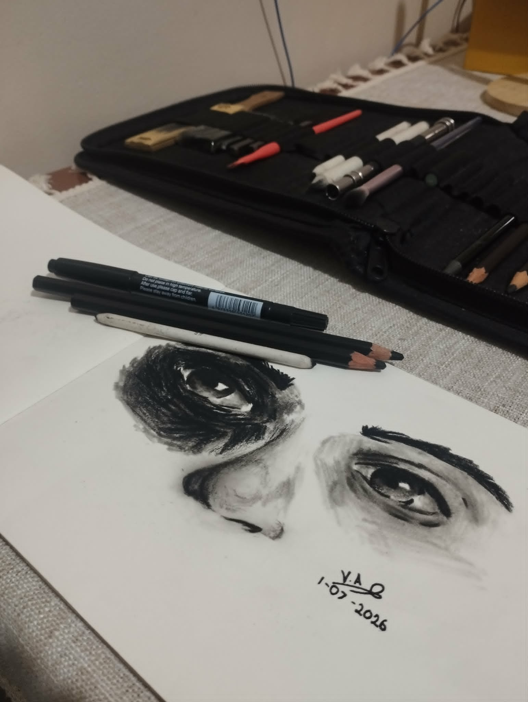
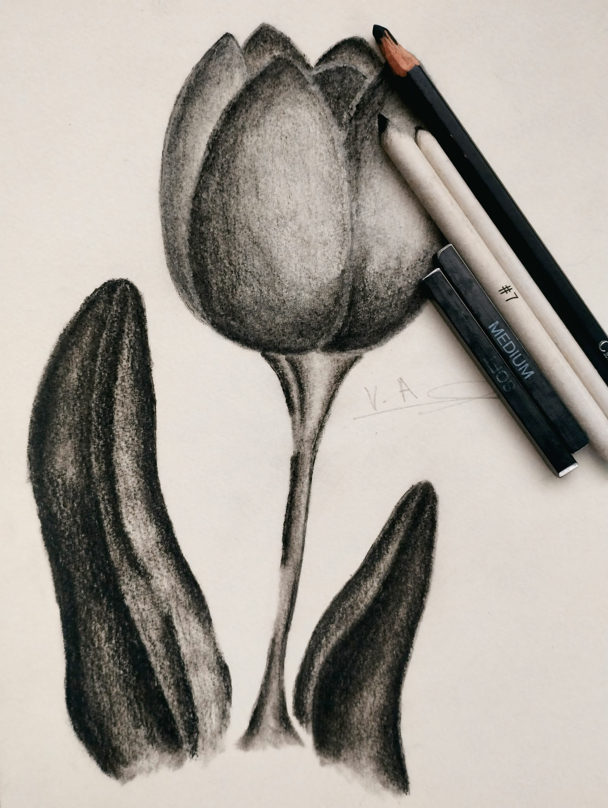
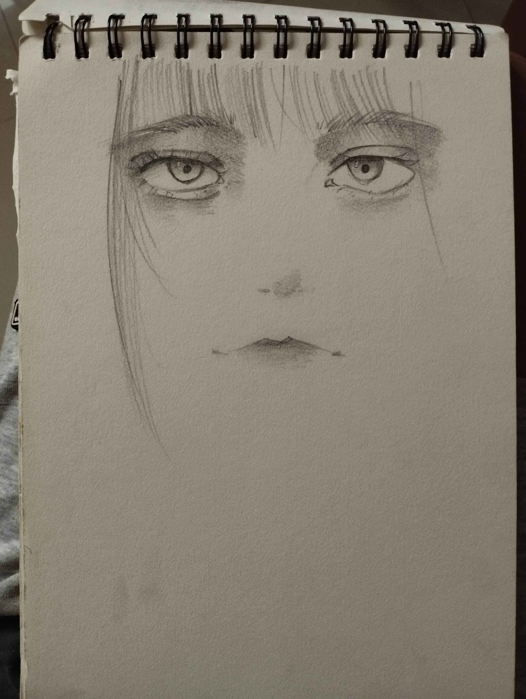
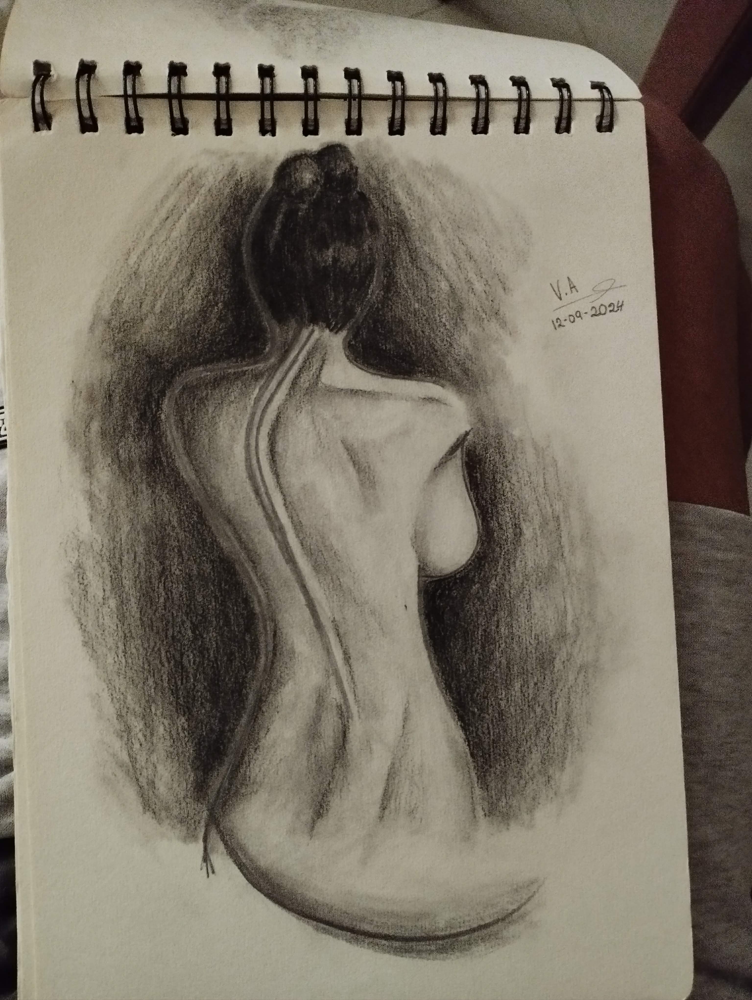
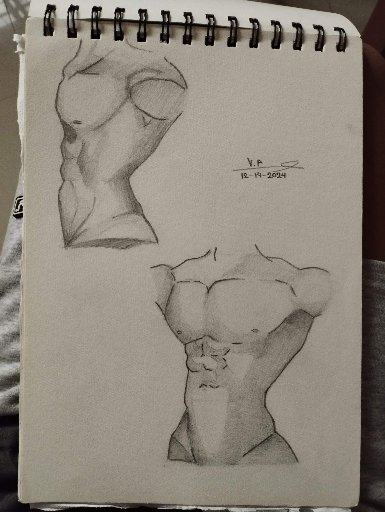
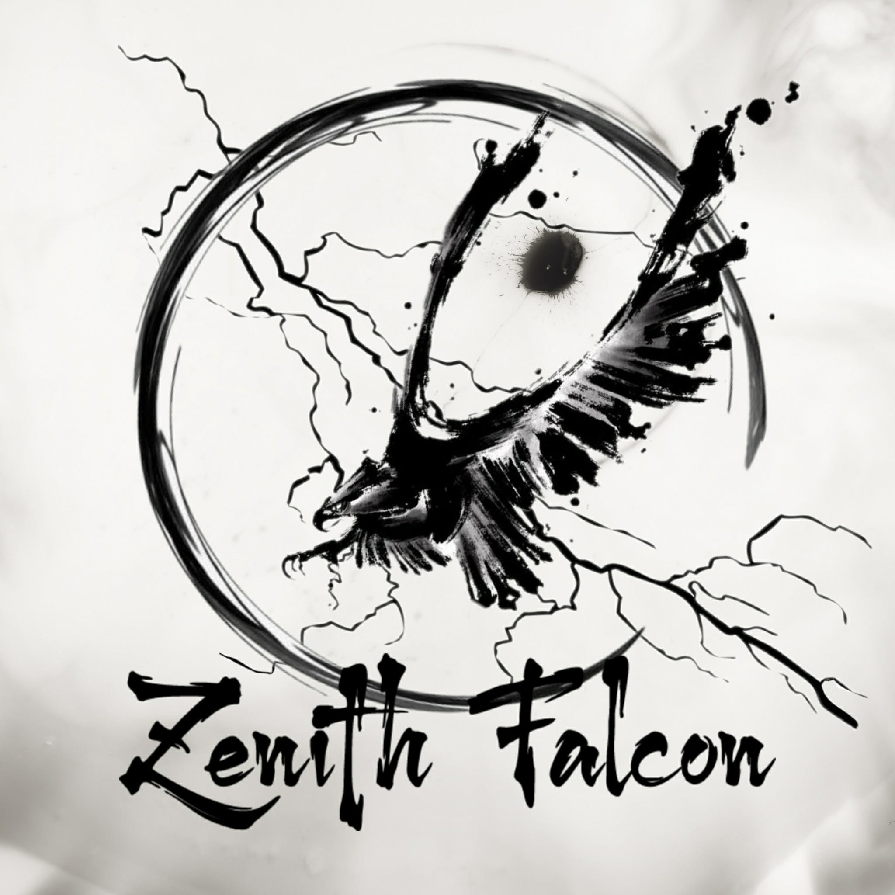

About Me
Hi!, my name is Vince Arby A. Alegria 19 years of Age. I live in Dagumbaan, Maramag, Bukidnon and I aspire to be a Graphic Designer and an Artist. I mostly sketch and use coloured pencils, but I'm currently going outside my comfort zone and exploring what other mediums work well with me. I'm trying to practice charcoal and anatomy right now.
I like snakes and dogs, though I am deathly terrified of spiders. I do E-sports but I have a bad luck at finding good teams, especially finding non-toxic teams to enter competitions on.
As an IT student, I have realised that my real passion lies in becoming a graphic designer and artist. I love how art lets me express myself and bring ideas to life visually, which feels way more exciting than just coding or tech in general. To make this happen, I am focusing on learning design tools like Canva and WPS right now since i can't afford Microsoft or Adobe Photoshop yet, practicing whenever I get the chance, and creating my own projects to build a portfolio that shows what I can do. I also spend time looking at other artists works to get inspired and figure out my own style. I know it will not be easy, but by connecting with people in the design world and always pushing myself to improve, I believe I can turn this passion into a real career. Usually whenever a design doesn't need to be formal I go all out, incorporating what I like to my designs alot of them are Pokemon and Omniscient Reader's Viewpoint.
Education
- I went and Graduated at Dagumbaan Elementary School(DES), now known as Dagumbaan Integrated School(DIS)
- I Graduated Highschool at Our Lady of Fatima Highschool(OLFHS)
- I Graduated Senior Highschool at Bukidnon National School of Home Industries(BNSHI)
- Now studying at San Isidro college in Bs Information Technology
Skills
- Graphic Design
- Creative Thinking
- Attention to Detail
- Computer Literate
Hobbies & Interests
-
Sketching

Eyes of Regret
"I never saw how far I'd gone — you never said a word, just took everything I dished out. When you vanished without a trace, the weight of it all crashed down so hard I struck my own face. Now this black eye stares back at me from every glass — there was no final look, no goodbye at all… and I'm drowning in every regret for crossing lines I never even saw."

Tulip of Disdain
"Drawn in cold disdain, this tulip loses its fake colorful charm and stands plain and worthless — a failure unworthy of respect, just like me."

Makima from CHAINSAWMAN
"I drew this one for fun, I just wanted to see if I could draw a character from a manga I like."

Bare Honesty
"Drawn in a moment of raw honesty, this piece bares my soul without any filters or pretenses — just the unvarnished truth of who I am."

Anatomy Practice
"Anatomy practice is a crucial part of my artistic journey, helping me understand the human form and improve my ability to create realistic and dynamic characters."
-
Digital Editing (Microsoft Tools, Canva, Picsart, CapCut)

Squad Logo
"This is the logo I designed for my squad in Esports."

Omniscient Reader's Viewpoint
"I made this for a school project, show an image that has the golden ratio"
Groups & Communities
- KemCo Beta Testers(Kotobuki Engineering & Manufacturing Co.)
- BLVCK AETERNUM in CoS
- Pokemon Philippines Community
Contact & Online Presence
Connect with me on these platforms: